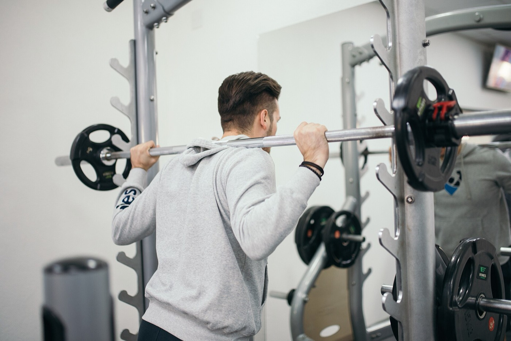
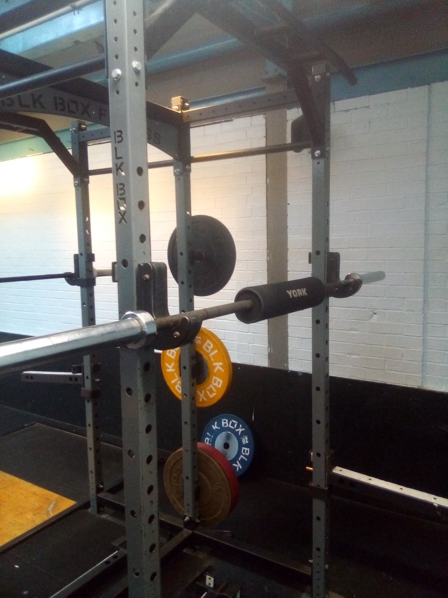
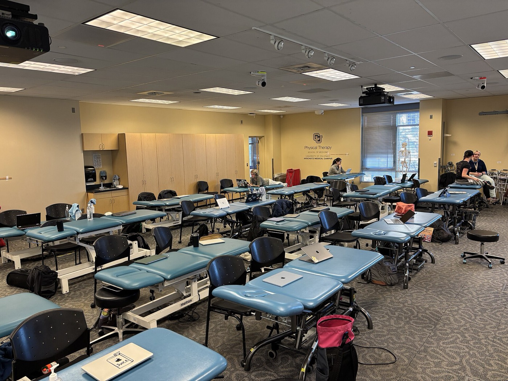

Fisioterapia y readaptación deportiva
Volver a entrenar por criterio, no por calendario.
El alta no llega cuando se cumplen las semanas, sino cuando la rodilla aguanta lo que le vas a pedir. Aquí eso se mide antes de decírtelo.

Cómo trabajamos
Los criterios de alta que usamos son los que se emplean en readaptación deportiva: fuerza comparada con el lado sano, salto y control del gesto. Nada de «cuando ya no duela».
Tratamientos
Tres cosas que hacemos distinto
Lo que no vas a encontrar aquí
No decimos que todo esto esté mal en cualquier contexto. Decimos que como tratamiento principal no funciona, y que quien te lo vende como tal te está cobrando por que te sientas atendido.
Si llevas semanas parado sin saber por qué, empieza por la valoración.
Una hora, con tratamiento incluido, y sales con un plan escrito y un número de sesiones estimado.
Tratamientos
Lo que hacemos, y en qué orden.
Casi nadie necesita las seis cosas. La primera sesión sirve para saber cuáles sí.
La terapia manual alivia y prepara; lo que cura de verdad es el ejercicio. Si una clínica te ofrece sólo camilla y máquinas, te está vendiendo la mitad del tratamiento.
Cada uno, con su para qué y su para qué no
¿Qué me pasa?
Cuatro preguntas para saber si corre prisa.
Esto no es un diagnóstico y no puede serlo. Sirve para una cosa concreta: saber si tienes que ir hoy al médico, pedir cita esta semana, o puedes esperar.
Ninguna herramienta por internet sustituye a una valoración presencial. Ante dolor en el pecho, pérdida de fuerza súbita, fiebre alta o un traumatismo fuerte, vaya a urgencias sin pasar por aquí.
Mapa del cuerpo
Señale dónde le duele.
Pulse una zona y verá qué entra más por la puerta en esa parte, cuánto suele tardar y con qué se trata.
Escala de dolor
Del 0 al 10, y qué hacer con cada número.
La pregunta que importa no es cuánto duele, sino si puedes cargar con ese dolor sin empeorar. Esto lo contesta.
La regla que usamos viene de la rehabilitación de tendones: se puede cargar con dolor de hasta 4 sobre 10 siempre que a las veinticuatro horas haya vuelto al punto de partida. Si al día siguiente está peor, la carga fue excesiva aunque en el momento no doliera.
Lesiones
Las que más vemos, y lo que suele fallar.
La lesión rara vez está donde duele. Estas son las cinco que más entran por la puerta y qué hay detrás de cada una.
Recuperación
Cuánto se tarda de verdad en volver.
Estas curvas son la recuperación típica de tres lesiones frecuentes. La línea es la función recuperada; las bandas, las fases del tratamiento.

Ver las fases en tabla
Curvas orientativas construidas con los plazos habituales en la literatura de readaptación. Cada persona va a su ritmo: la edad, el deporte y lo que se hacía antes de la lesión cambian mucho el resultado. Esto sirve para saber qué esperar, no para ponerse una fecha.
Vuelta al deporte
Ponga la fecha de la lesión y vea el calendario.
No es una promesa: es lo que suele tardar. Sirve para hablar con el entrenador con fechas encima de la mesa en vez de con «ya veremos».
Plazos orientativos de la literatura de readaptación. El alta real depende de que se cumplan los criterios de fuerza y control, no de que llegue la fecha. Si llega el día y no se cumplen, se sigue trabajando.
Test de fuerza
Compare el lado lesionado con el sano.
Es el criterio que usamos para dar el alta: menos de un 10 % de diferencia entre lados. Hágalo en casa y traiga los números a la primera cita.
Autotest orientativo. Haga primero el lado sano, descanse dos minutos y luego el lesionado. Pare si aparece dolor por encima de 4 sobre 10. Si no puede hacer ninguna repetición, no anote cero: anótelo y cuéntelo en consulta.
Movilidad
Un grado se mide. «Mucho mejor» no.
Medimos el rango articular en la primera sesión y lo volvemos a medir cada dos semanas. Es la manera de saber si el tratamiento va o no va.
Ejemplo real de goniometría en una recuperación de seis semanas. El objetivo no es siempre llegar al máximo teórico: es llegar a lo que el gesto de tu deporte necesita.
Ejercicios
Filtre por zona, material y fase.
Los que más mandamos a casa. No sustituyen a un plan hecho para usted, pero ninguno hace daño bien ejecutado.
Ningún ejercicio con esos filtros. Quite alguno.
Equipo
Cuatro personas, y siempre la misma contigo.
No rotamos pacientes entre fisioterapeutas. Quien te valora el primer día es quien te da el alta.
Cómo trabajamos entre nosotros
Lo que nos exigimos
Centro
Más sala que camilla, y por algo.
Ciento sesenta metros repartidos a propósito: la mayor parte es espacio para moverse, porque ahí es donde se recupera.

Créditos de las imágenes
Fotografías de Wikimedia Commons con licencia libre, atribuidas a su autor.
Cómo llegar y cuándo abrimos
Abrimos de lunes a viernes de 7:30 a 21:00 y los sábados de 9:00 a 14:00. Las franjas de antes de las nueve y de después de las siete son las que primero se llenan, porque son las que permiten venir sin faltar al trabajo: si puedes a media mañana, tendrás cita mucho antes.
Precios
Publicados, y sin sorpresas al salir.
La primera valoración dura una hora y ya incluye tratamiento. Si no somos lo que necesitas, te lo decimos ahí y te derivamos.
Los bonos no caducan y son transferibles a alguien de tu familia. No trabajamos con permanencia ni con paquetes cerrados de veinte sesiones decididos antes de valorarte.
Cuántas sesiones vas a necesitar de verdad
Cuándo te decimos que no
La valoración dura una hora y ya incluye tratamiento.
Si al terminarla no somos lo que necesitas, te lo decimos ahí mismo y te derivamos.
Preguntas
Lo que más nos preguntan.
Cita
Cuéntanos qué te pasa y desde cuándo.
Con eso ya podemos decirte si la primera cita corre prisa o puede esperar a la semana que viene.
Qué pasa después de enviarlo